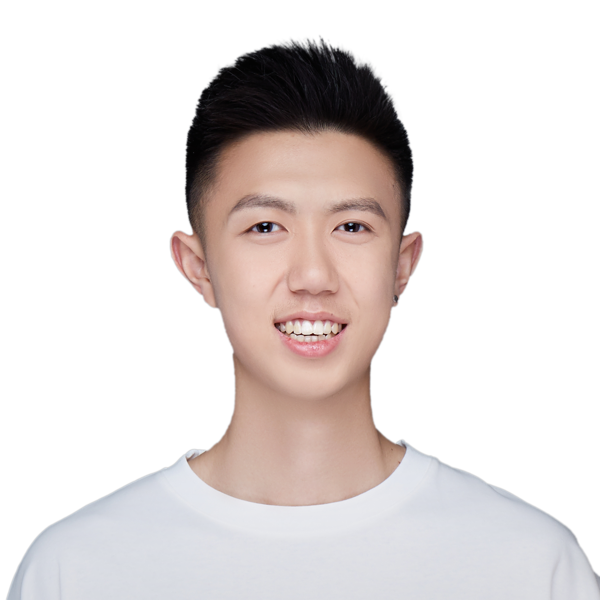

关于
设计
研究
媒体
运动
其他
EN
|
中文
关于
设计
研究
媒体
运动
其他
EN
中文

龙俊潇
作为一名跨学科研究者，我专注于将新兴技术与实证研究结合，以严谨的方法论探索并创造令人愉悦的交互体验。我目前就读于佐治亚理工学院人机交互硕士项目，拥有清华大学建筑学院本硕学位，师从庄惟敏院士。 我的研究兴趣聚焦于用户体验量化、混合现实原型工程、可穿戴交互与人因工程，目前主要探索基于生理信号与行为建模的可穿戴设备交互.
在技术能力方面，我精通 Python、C#、Swift、HTML/CSS/JavaScript、MATLAB、R，并具备扎实的机器学习与深度学习项目经验。同时，我熟练使用 Figma、Adobe Suite、Rhino 和 Unity 等 2D/3D 设计工具，能够将设计思维与工程实现紧密融合，推动创新原型与解决方案落地。
工作与科研经历包括：
• 在字节跳动 Pico 部门担任混合现实人机交互研究员；
• 在佐治亚理工 NeuroLoops 实验室从事行为建模、神经信号处理与神经网络研究；
• 与理想汽车合作，开发车载 AI 代理的多模态交互原型并开展用户研究。
除学术与研究背景外，我曾是清华大学男篮二级联盟的首发球员。这段经历培养了我出色的团队协作、资源统筹与抗压能力，使我能够在复杂而高强度的环境中高效完成多任务并达成目标。
[ 项目精选 ]
佐治亚理工校园导航
[
2024
]
用户体验设计，用户界面设计
COX企业技术支持终端
[
2024
]
量化用户研究，认知负荷，人因研究，可用性研究，眼动追踪
高校综合体育场馆用户认知负荷研究
[
2024
]
量化用户研究，认知负荷，运动决策，脑电，事件相关电位，眼动追踪，虚拟现实
jlong343@gatech.edu
https://www.linkedin.com/in/junxiao-long/